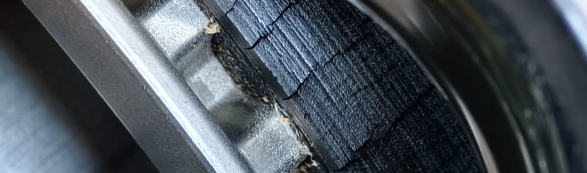

Experiencia real – Motor 1.2 PureTech

- Vehículo: Turismo con motor 1.2 PureTech (Citroën C4)
- Kilometraje actual: ~79.000 km (65.000 – 70.000 km en el episodio de enero de 2026)
- Mantenimiento: Siempre en concesionario oficial, incluso antes de los plazos máximos indicados por la marca (salvo sustitución urgente de frenos delanteros en Euromaster)
- Garantía: Garantía ampliada Citroën + Extended Care Premium activa
Antecedentes relevantes (02/2025 · ~50.000 km y unos 4 años)
Antes de un mantenimiento programado, se realizó una revisión visual preventiva de la correa de distribución bañada en aceite, observándose un estado de degradación avanzado para ese kilometraje. Ante esta situación, el concesionario oficial procedió a:
- Sustitución de la correa de distribución en garantía.
- Sustitución de la bomba de agua, inicialmente prevista como reparación de pago, pero finalmente cubierta al constar la vigencia de la garantía ampliada.
Todos los mantenimientos del vehículo se habían realizado siempre en concesionario oficial, incluso antes de los plazos máximos indicados por la marca.
Aparición del problema posterior (01/2026 · ~65.000 – 70.000 km)
Tras estos antecedentes, el vehículo comenzó a presentar de forma intermitente un aviso relacionado con el regulador de velocidad, acompañado de un síntoma más grave: pérdida real de potencia del motor durante la conducción.
Cuando aparece el fallo
- El vehículo pierde respuesta al acelerador.
- La potencia disminuye de forma progresiva.
- Obliga a detenerse por seguridad.
- Tras apagar y volver a arrancar, el funcionamiento se recupera de forma temporal.
Comportamiento del fallo
- No ocurre todos los días.
- Aparece en distintos tipos de vía y velocidades.
- No sigue un patrón claro.
- Puede repetirse varias veces o desaparecer durante días.
Aclaración sobre el aviso del regulador
El regulador de velocidad no se utiliza habitualmente. Por diseño del sistema, un fallo propio del regulador solo debería provocar su desactivación, no una pérdida total de potencia ni la necesidad de detener el vehículo. Esto refuerza la idea de que el aviso mostrado es una consecuencia del modo de protección del motor, no la causa principal.
Paso por taller, actuación realizada y entrega (28/01/2026)
El vehículo fue llevado al servicio oficial. El fallo no siempre se reproducía en pruebas y en algunas ocasiones no aparecían errores activos en diagnosis, lo que dificultó el diagnóstico inicial. El síntoma quedó reflejado como: fallo intermitente con aviso de regulador de velocidad y pérdida de potencia del motor.
Tras varios días de inmovilización (tres semanas en el concesionario), el taller realizó una intervención en el sistema del motor que incluyó trabajos en la parte inferior del bloque y en la zona superior (culata/tapa asociada). Según la información verbal facilitada inicialmente por el concesionario:
- Se realizaron trabajos de apertura.
- Se efectuó limpieza del cárter y de la chupona.
- Se sustituyeron elementos de estanqueidad (tapa/juntas).
El vehículo fue entregado operativo el 28/01/2026, funcionando con normalidad y con una respuesta más suave y progresiva, quedando pendiente de recibir el parte detallado en garantía para confirmar por escrito los componentes concretos sustituidos.
09/02/2026 · Fallo de arranque a las dos semanas y sustitución de batería
Ni dos semanas duró el coche sin volver a fallar: tras haber pasado tres semanas en el concesionario, volvió a presentar problemas de arranque. Al acudir, intentaron dar largas de nuevo y querían quedárselo para revisarlo desde el principio, hasta que tras reclamar de forma firme que era surrealista después de tres semanas sin coche, lo comprobaron en el acto, vieron que era la batería y la sustituyeron.
23/02/2026 · Recepción del parte/factura oficial tras reclamar un mes (intervención previa de desaceitador)
Tras reclamarlo durante un mes (ya que no lo enviaron por correo como habían indicado), el 23/02/2026 se recibió finalmente el parte/factura oficial de reparación en garantía correspondiente a la intervención realizada en enero en el servicio oficial. En dicho documento constan los siguientes trabajos efectuados:
- Sustitución del desaceitador (separador de vapores de aceite / sistema PCV).
- Sustitución de la junta asociada.
- Renovación del aceite del motor.
- Gestión y tratamiento del aceite usado.
Aunque no se facilitó un informe técnico detallado del diagnóstico, la sustitución del desaceitador y la renovación del aceite son coherentes con los síntomas descritos y con una contaminación del circuito de lubricación y ventilación del cárter derivada de la degradación previa de la correa bañada en aceite.
¿Qué es el desaceitador y por qué es importante?
El desaceitador (separador de vapores o sistema PCV) forma parte del sistema de ventilación del cárter y cumple funciones esenciales:
- Separa los vapores de aceite del aire del motor.
- Regula la presión interna del cárter.
- Evita que aceite y vapores contaminantes pasen a la admisión.
- Contribuye a mantener una combustión limpia y estable.
Cuando este componente se obstruye o deja de funcionar correctamente, pueden aparecer pérdida de potencia, funcionamiento irregular del motor, avisos electrónicos o modo degradado, mezcla inadecuada aire-combustible y contaminación del sistema de admisión.
Relación con la degradación de la correa bañada en aceite y escenario acumulativo
- La correa bañada en aceite libera partículas de goma y material sintético al degradarse.
- Estos residuos contaminan el aceite y circulan por el sistema de lubricación.
- Pueden obstruir conductos, tamices y componentes críticos, alterando la presión interna del cárter y saturando el desaceitador.
- Cuando la ECU detecta anomalías de presión o gestión, entra en modo protección, desactiva sistemas secundarios (como el regulador) y limita la potencia del motor.
~75.000 km · Pastillas y discos de freno delanteros (Euromaster)
Al alcanzar los 75.000 km apareció un fuerte ruido metálico al frenar y una pérdida muy acusada de capacidad de frenado. Al contactar con el taller del concesionario oficial daban cita a un mes vista sin ofrecer alternativa pese a que el coche no podía circular con seguridad en esas condiciones. Ante esa respuesta, acudí a un taller Euromaster cercano a casa, donde sustituyeron pastillas y discos de freno delanteros al día siguiente (las pastillas traseras también están próximas al cambio, aunque todavía aguantan).
~79.000 km (30/11/2026) · Adelanto del 6.º mantenimiento por olor a gasolina en el aceite
Aunque aún no se había cumplido un año desde la renovación de aceite realizada en enero de 2026, a los ~79.000 km decidí adelantar el 6.º mantenimiento al 30/11/2026 tras detectar olor a gasolina en el aceite (dilución de combustible, casuística conocida en estos motores), priorizando renovar cuanto antes aceite y filtro y dejar constancia documental de la especificación de aceite aplicada, el estado de la correa y el grosor de las pastillas traseras.